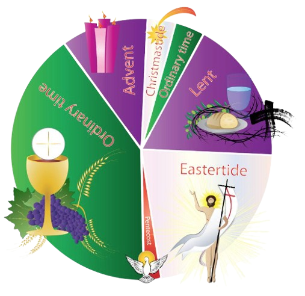

0
Online Courses
0
Students Enrolled
0
Experts Instructors
0
Hours Content
History of Convents
Convents have been communities where nuns live, pray, and work together since the early centuries of Christianity. Originating around the 3rd and 4th centuries, these religious communities allowed women to dedicate their lives to spiritual devotion and service. During the Middle Ages, convents became important centers for education, healthcare, and charity across Europe, often attached to monasteries or churches. Nuns followed strict routines of prayer and work and played a vital role in preserving knowledge and helping the poor and sick. Today, convents continue to serve religious and social purposes, with many nuns actively involved in education and community service.
Our Life & Prayer
A Christian sister devotes her entire life to God through vows of poverty, chastity, and obedience, choosing a path of simplicity, prayer, and service. Her day begins in quiet communion with the Lord and continues through acts of compassion—teaching, caring for the sick, feeding the poor, and offering comfort to the lonely. She lives not for herself but for others, finding joy not in possessions but in presence, and strength not in power but in prayer. Rooted in faith and community, her life is a living prayer—a sacred offering of love, humility, and grace. In every moment, she prays: “Lord, let my hands serve, my heart love, and my life reflect You.”
Spiritual Retreat
A Spiritual Retreat is a sacred time set apart for prayer, reflection, and reconnecting with the divine in a peaceful setting. It offers space for healing, inner clarity, and spiritual growth away from everyday distractions.

Bilble
Hosting small group teachings, devotions, or Bible reflection sessions for women, youth, or the entire community..

Preparing for Liturgical Seasons
Preparing hearts and spaces for Lent, Advent, Easter, and Christmas through prayer, fasting, and reflection.
Friday Fasting & Prayer for the World
Fasting (or choosing a simple meal) on Fridays in prayer for peace, healing, and those in need.